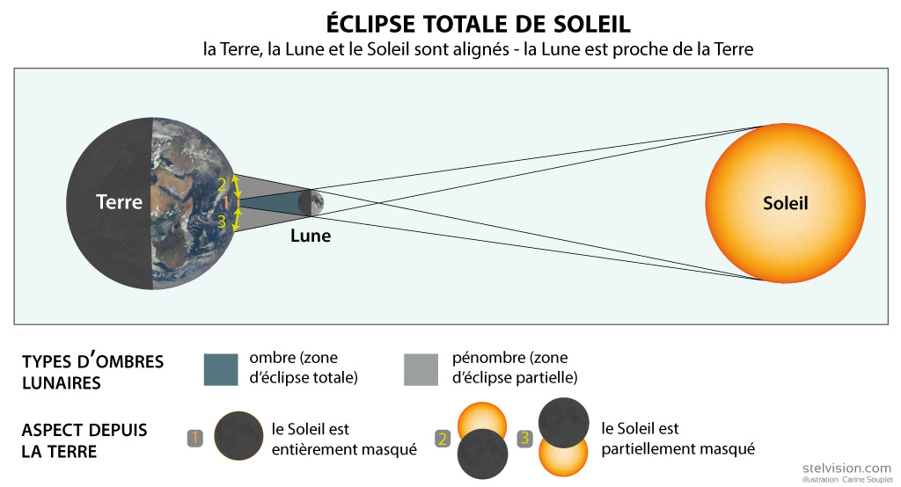
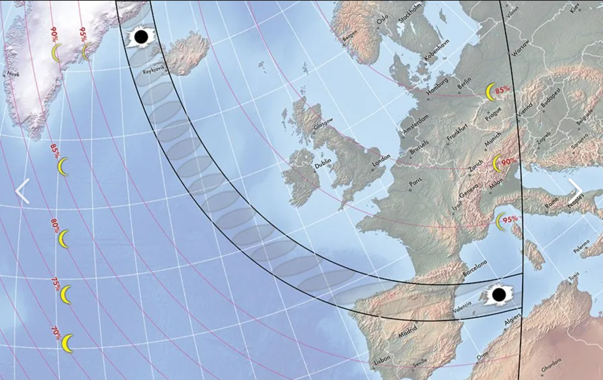
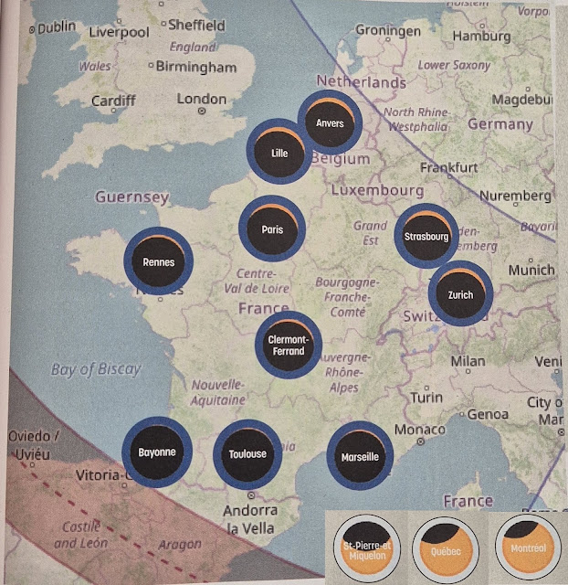

Terre, Lune et Soleil : Le grand jeu des distances
Dans le ciel, le Soleil semble immense et la Lune paraît beaucoup plus petite. Pourtant, lors d'une éclipse solaire, la Lune peut parfois cacher complètement le Soleil ! Comment un petit astre de seulement 3 474 km de diamètre peut-il masquer une étoile gigantesque de 1,4 million de kilomètres ? La réponse se trouve dans un incroyable hasard cosmique : un parfait jeu d'échelles combinant tailles, distances et alignements.
Une éclipse se produit lorsque plusieurs objets célestes s'alignent parfaitement. Dans le cas d'une éclipse solaire, la Lune passe précisément entre la Terre et le Soleil.
☀️🌙 L'éclipse solaire : un alignement parfait
La Lune projette alors une petite zone d'ombre sur la surface terrestre. Seules les personnes situées dans cette zone d'ombre totale verront le Soleil s'éteindre en plein jour !
Mais pourquoi la Lune arrive-t-elle à cacher une étoile 400 fois plus grande qu'elle ?
📏 Le secret : la "taille apparente"
Dans l'espace, ce n'est pas seulement la taille réelle d'un objet qui compte, c'est aussi son éloignement !
- Le Soleil est environ 400 fois plus large que la Lune.
- Mais il est aussi environ 400 fois plus éloigné de la Terre que la Lune !
- Résultat : Vus depuis notre jardin, ils paraissent presque de la même taille dans le ciel. C'est la taille apparente.
💡 Le sais-tu ? Comme la trajectoire (l'orbite) de la Lune autour de la Terre n'est pas un cercle parfait mais une ellipse (un cercle un peu écrasé), sa distance varie ! Au Périgée, elle bat des records de proximité. À l'Apogée, elle s'éloigne au maximum.
À ne pas confondre : Éclipse Solaire ou Lunaire ?
L'alignement change tout le spectacle !
☀️ Éclipse Solaire
La Lune passe devant le Soleil et projette son ombre sur la Terre. Le Soleil disparaît.
🌕 Éclipse Lunaire
La Terre bloque la lumière du Soleil et projette son ombre sur la Lune. La Lune devient rouge cuivré !
Dans notre univers, tout danse ! La Terre tourne sur elle-même et autour du Soleil, tandis que la Lune tourne autour de notre planète tout en tournant aussi sur elle-même.
⏱️ Les chronomètres de l'espace
- La Terre tourne sur elle-même en 24 heures (1 jour).
- La Lune fait le tour de la Terre en environ 27,3 jours.
- La Terre fait le tour du Soleil en 365,25 jours (1 an).
Mais voilà un grand mystère : si la Lune fait le tour de la Terre en 27 jours, pourquoi n'y a-t-il pas une éclipse de Soleil tous les mois lors de la Nouvelle Lune ?
📐 La coupable : L'inclinaison de 5 degrés
L'orbite de la Lune n'est pas posée à plat sur le même plan que l'orbite de la Terre (appelé le plan de l'écliptique). Elle est inclinée d'environ 5°.
C'est très peu, mais sur les distances immenses de l'espace, cela suffit pour que l'ombre de la Lune passe la plupart du temps au-dessus ou en dessous de la Terre. L'alignement parfait ne se produit que 2 à 5 fois par an !
Une éclipse se produit quand les trois astres suffisamment bien alignés.
• Éclipse Solaire : La Lune passe devant le Soleil.
• Éclipse Lunaire : La Terre passe entre le Soleil et la Lune, projetant son ombre sur elle.

La "Bande de Totalité"
Tout le monde sur Terre ne voit pas une éclipse totale. L'ombre de la Lune est toute petite ! Seules les personnes situées dans la bande de totalité (le chemin exact de l'ombre au sol) verront le Soleil disparaître. À côté, dans la zone de pénombre, on ne verra qu'une éclipse partielle. Voici un schéma représentant la zone de pénombre et la bande de totalité de la prochaine éclipse (12 août 2026).

Depuis la France
En France, l'éclipse ne sera pas totale. Le schéma ci-dessous montre ce à quoi elle ressemblera dans plusieurs villes du pays.

🤯 Un hasard cosmique... qui ne durera pas toujours !
Aujourd'hui, la Lune paraît presque exactement de la même taille que le Soleil dans notre ciel. C'est ce qui permet les magnifiques éclipses solaires totales.
Mais ce n'est pas une situation permanente ! La Lune s'éloigne de la Terre d'environ 3,8 centimètres chaque année. Cela paraît minuscule, mais sur des millions d'années, cette distance devient énorme.
Dans environ 600 millions d'années, la Lune paraîtra trop petite dans le ciel pour cacher complètement le Soleil. Les éclipses totales disparaîtront alors, laissant uniquement des éclipses annulaires, où un anneau lumineux restera visible autour de la Lune.
Incroyable : nous vivons à l'une des rares périodes de l'histoire de la Terre où des éclipses solaires totales sont possibles !
📅 Prochaine éclipse solaire totale
Marque ton calendrier : le 12 août 2026 ! Une éclipse solaire totale sera visible depuis certaines régions d'Europe, notamment l'Espagne et l'Islande.
- Éclipse : Un alignement parfait en ligne droite de trois corps célestes.
- Taille apparente : La Lune peut cacher le Soleil car elle est environ 400 fois plus petite et environ 400 fois plus proche.
- Orbite Elliptique : La trajectoire de la Lune forme un ovale. Sa distance varie en permanence.
- Périgée & Apogée : Périgée = Lune au plus près (grosse lune). Apogée = Lune au plus loin (petite lune).
- Inclinaison magique : L'orbite de la Lune est penchée de 5°, ce qui évite d'avoir des éclipses tous les mois !